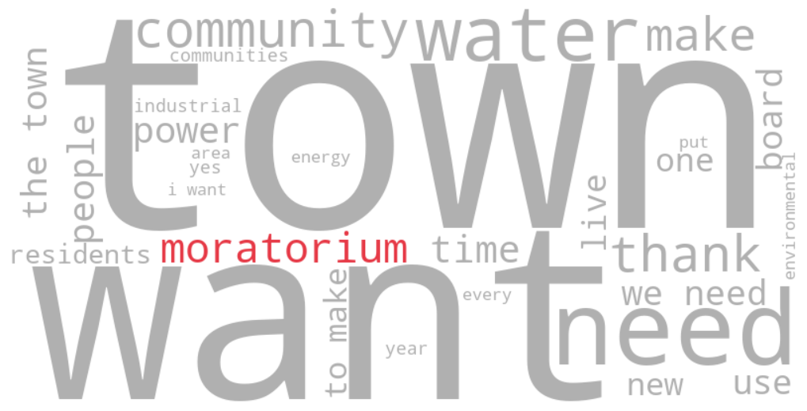
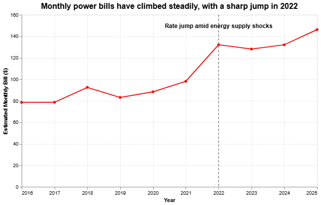

Image 1: Word cloud generated from transcripts of East Fishkill Town Board meetings since March 2026.
July 2026
A developer's plan to build a 1-gigawatt (GW) data center in East Fishkill, NY, one of the largest data center proposals in New York state, set off months of outcry in a quiet town of roughly 30,000 people. The saga ended in June with a unanimous vote for a three-year moratorium, effectively shelving the project. This is the story of how a proposal residents didn't know existed until May collided with rising concerns over power rates, water resources, and infrastructure strain.
A New Jersey-based developer submitted an interconnection request to the New York Independent System Operator (NYISO) in 2025 to evaluate the grid impacts of a proposed 1 GW (1,000-megawatt) data center on wooded parcels in East Fishkill that had previously been considered for warehouse development. Local media started reporting on the proposal in May 2026. Residents quickly began asking what the proposal would mean for their community and what was at stake, raising those questions during town hall meetings.
A word-frequency analysis of the meeting transcripts captures a community's shift from not knowing, in March, to discussing the developer's plan heatedly at regular town board meetings by June. The word cloud shows that residents mentioned infrastructure, water, and the grid again and again, but focused on describing what they feared losing: their community, their quality of life, the town's character itself.
The public opposition culminated in a June 25 meeting that ended with a unanimous vote to shelve any data center plans for three years. Here are a few voices from that meeting, all from local residents:
“Even in rural areas where there are large parcels of land and there aren't that many people living, these people are starting to become very concerned about their quality of life and the character of their community.”
“I think the risks outweigh the benefits.”
“The town of East Fishkill has rules about how many chickens you can have… No roosters because they're as noisy as a data center.”
“No AI data center will ever be more important or even as important as the communities that we have here, the lives that people have built over generations, the environment we try our best to protect from things like these data centers, the wildlife that we live among.”
What a data center would cost a town wasn't only about noise or wildlife. For many residents, it was also about the electric bill already climbing in their mailbox.
Local residential electric rates were already on the rise well before the developer's proposal became public, evidence that residents' fears about their bills weren't unfounded, regardless of whether a data center is ever built here.

Image 2: Average monthly household power bill estimated based on 600 kWh benchmark usage and average power rates, disclosed by Central Hudson Gas & Electric, the local power and natural gas provider.
Central Hudson's average residential electric rate has increased by 86% between 2016 and 2025, according to the utility's own data.
This year, following another rate increase, according to the local utility, an average residential household will see its monthly bill increase by another $6.25.
The potential pressure on the grid from a 1 GW proposal also alarms local residents.
0
The number of New York households whose annual electricity consumption is equivalent to a 1 GW data center operating continuously.
Image 3: Analysis of annual power consumption by a single 1 GW data center in relation to the power consumption of average New York households.
What is unfolding in East Fishkill reflects a broader national trend. Across the country, local governments are imposing temporary moratoriums, tightening zoning rules or slowing approvals for data centers as officials weigh their effects on electricity demand, water supplies, noise and land use.
In June 2026, the state Legislature passed a bill that would impose a 12-month moratorium on permits for certain large data centers while state officials study their environmental and energy impacts. If signed by the governor, New York would become the first state in the nation to enact such a statewide moratorium.
This story draws on transcripts of four East Fishkill Town Board meetings between March and June. Local media reported about the developer’s plan to build a data center in May. The transcripts were pulled via YouTube's caption API; keyword frequency and co-occurrence analyses were run in Python to identify recurring keywords and phrases; the local utility's published rate records were used to calculate monthly power bills. The power-use scenario was analyzed with reference to publicly reported AI data center power-use estimates. No New York state average power rates could be found that were strictly comparable to the local utility's rates, limiting the ability to put this figure in broader context.